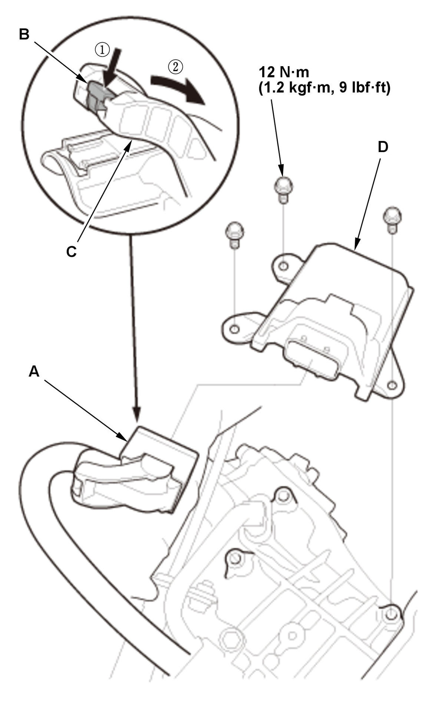

Removal and Installation
- Air Cleaner - Remove
- Intake Air Duct - Remove
- TCM - RemoveFig 1: TCM Replacement Components With Torque Specifications And Connector Disconnection Sequence (K20C2 - CVT)

Courtesy of HONDA, U.S.A., INC.1. Disconnect the connector (A) by pushing the lock (B) and pulling the lever (C) in the numbered sequence shown. 2. Remove the TCM (D).
- All Removed Parts - Install
1. Install the parts in the reverse order of removal.
NOTE:- Check the connector for corrosion, dirt, or oil, and clean or repair if necessary.
- Make sure the connector is fully seated.
Procedure After Replacing TCM
- TCM - Update